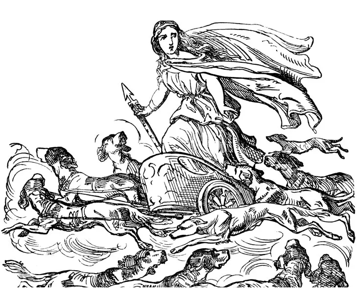

-DIOSES NORTICOS-

DIOSES NORDICOS MAS IMPORTANTES
|
ODIN
Odín era el señor de Asgard y padre de los dioses. Considerado el dios de la guerra, la muerte, la sabiduría o la magia, sería el equivalente a Zeus en las culturas germano-nórdicas. Para alcanzar la sabiduría universal Odín tuvo que arrancarse el ojo derecho y beber de Mimir y también pasó nueve días colgado del árbol mundo (Yggdrasil) con el fin de descubrir el secreto de las runas. Odín tenía la costumbre de aparecer disfrazado en el mundo de los humanos para crear conflicto, pero como dios se le representaba empuñando su lanza Gungir y acompañado de los cuervos Hugin (Pensamiento) y Munin (Memoria). |
| 
|
Frigg
Frigg es la esposa de Odín, reina de Asgard y famosa por su sabiduría y poderes premonitorios. Era la diosa del amor y del matrimonio y solía ser asociada con la diosa Fulla, que era al mismo tiempo su guardiana y su confesora. Frigg es conocida por ser la madre del dios Baldr y artífice de su aparente inmortalidad. Es una de las diosas más representadas y adoradas de la mitología del norte de Europa.
|
|
THOR
El dios del trueno y de la humanidad es probablemente la deidad más conocida de todo el panteón nórdico, en parte por su presencia en las historias de Marvel. Con su inseparable martillo Mjollnir, Thor era el dios guerrero por excelencia, el más fuerte y valiente de todos y protector de Asgard y Midgard (la Tierra) frente a cualquier peligro. Encarnaba los valores que los vikingos buscaban en combate, como el arrojo o la fuerza bruta. Thor encontraría su muerte durante un combate contra la serpiente Jörmungandr durante el Ragnarök. |

-REGRESAR A LA PAGINA PRINCIPAL-